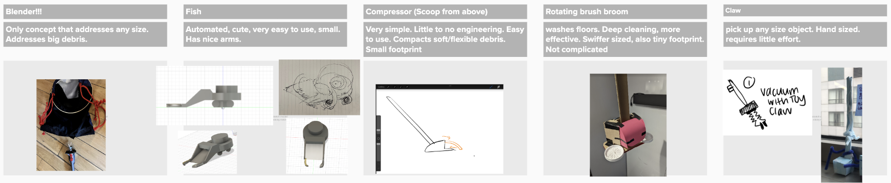
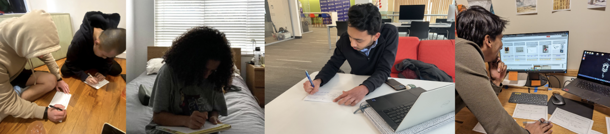
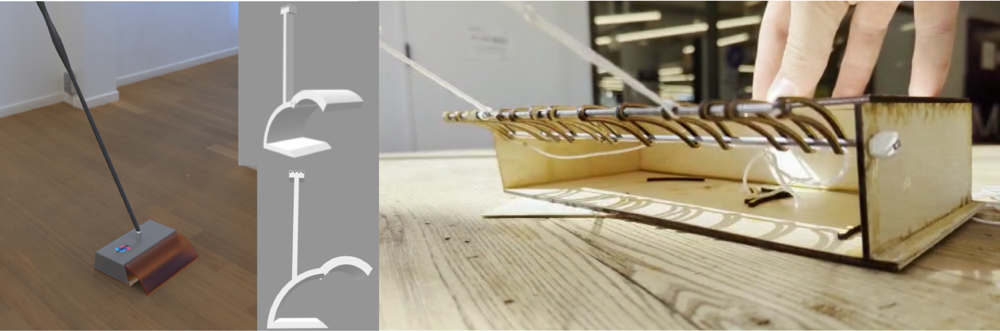
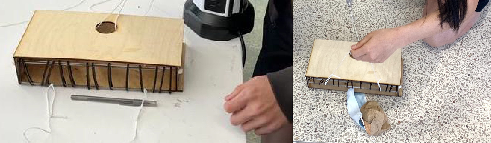
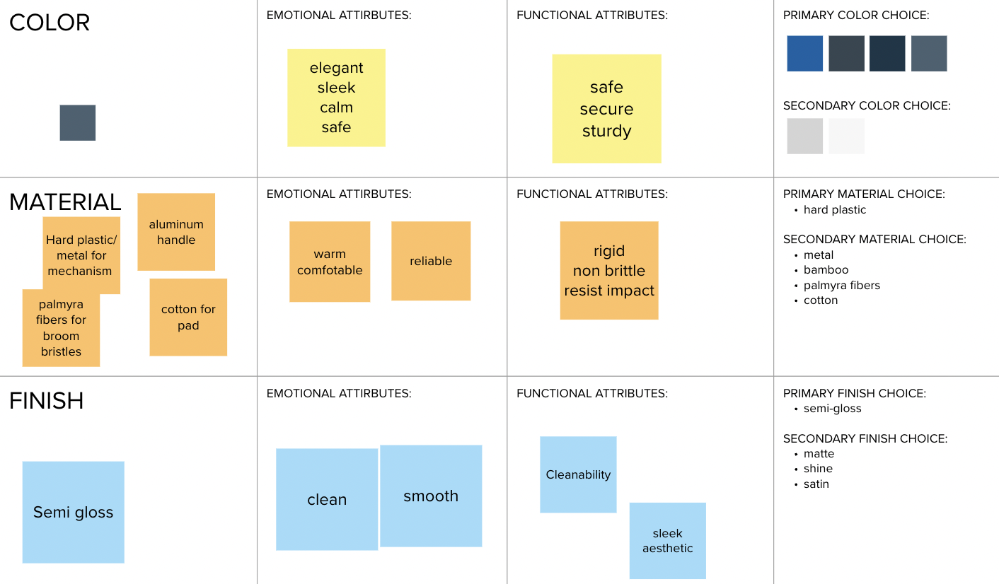
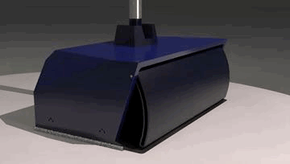
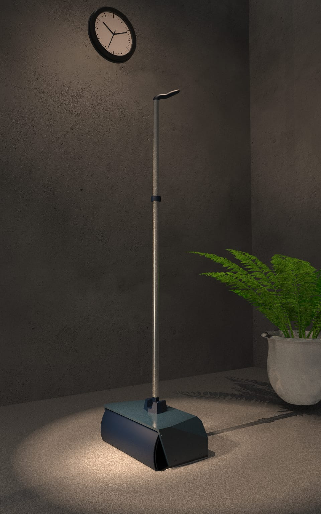
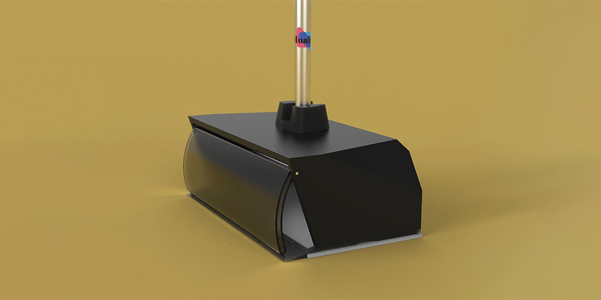

HUALISO SWEEPEASE
Cleaner Hard Floors with Minimal Effort
ROLE: Product Designer
TIMEFRAME: January 2023 - May 2023
DESIGN CHALLENGE
How Might We make difficult and/or dreaded
household cleaning chores easier and more enjoyable?
This semester I was challenged by my Human-Centered Product Design course to research and develop a cleaning tool.
I worked with a team of 3 - Guglielmo Fonda, Elisey Goland, and Sofia Wheeler - to bring our solution to life. I worked as a lead product designer in 1) researching and need-finding 2) defining our key insights 3) developing and testing product iterations 3) delivering final prototypes and models.
RESEARCH
To understand the what product to create, we first needed to identify the problems to solve. What’s product development without a true need to address? – So, we set off to interview our selected target audience of college students. We cleaned along with participants to find the most crucial pain points of their everyday maintenance of cleanliness (to whatever degree that actually happens).
College students hate cleaning- it’s too time consuming and too overwhelming to do a full clean with their busy schedules– especially for students who were knew to living alone and didn’t know where to get started. But despite irregular cleaning schedules, frequent liquid spills, crumbs, dust, etc made it necessary that at the least, the floors need to be kept clean.
Key Insights
• No budget for those ~fancy~ tools that actually work well
• No space to store the many tools necessary for a thorough clean
• If cleaning the cleaning tool itself is harder and grosser than the initial mess, forget about it
• Beginner cleaners don’t know where to get started
• Need to be able to clean different types of messes/different sized debris
• The floor must be kept clean!
DEFINE
How Might We simplify cleaning different sizes of debris?
With insights from the research stage, we found that just one floor cleaning tool was not sufficient for different types of messes. Any affordable vacuum risks getting clogged with larger debris while missing some of that fine dust + they’re a hassle to charge, lug around with a cable attached, and store in tight spaces. Dust pans, brooms, and mops can be annoying to use and ineffective.
However, in asking participants further on their current tool choice for floor cleaning, I found that the most popular cleaning tool amongst college students was the Swiffer- loved for its affordability and convenience of use over the products named above. But still, the Swiffer could only help to wipe down floors and would push around anything bigger than a crumb.
So maintaining the highlights of the Swiffer’s pros (affordability, intuitive use, convenience of disposal process, storeability), we narrowed our HMW to address the pain point of different sized debris and types of messes. How could we improve a floor cleaning tool to capture anything from dust to hair to dropped pasta to a waterbottle?
DEVELOP
Ideation through Sketching and Lo-Fi Prototyping
Concept Sketching
To get started on ideation, I sought to keep potential solution options focused on quanitity over quality. Sketching was used to explore a broad range of concepts that were distinctive from one another.
Low Fidelity Prototyping
I began putting physical form to concepts, testing and visualizing specs of sketch concepts. With this, I invited a few college students to participate in a co-creation session, providing materials for notes, sketches, and paper models.
Concept Testing
 With 5 select concepts narrowed down from ideation, we asked participants to select a preferred concept with any further feedback. From this we decided to move forward with the concept of having an overhead claw.
Physical Prototyping & CAD Modeling
Next steps were to bring our early concept to life with models and prototyping.
Usability Testing
We then invited particpants to test the early physical prototype, giving task scenarios to understand needed refinements.
Key Usability Takeaways:
• Higher box height for larger debris, but not too high that it can't fit under couches
• Non rounded edges for corners
• Claw control from handle even for testing
• Slanted lip for bottom edge
• Bristles for bottom of overhead claw
DELIVER
Color Material Finish Considerations
Manufacturing and Life Cycle Considerations
In reviewing how SweapEase would be manufactured, as well as it's life cycle from sourcing to end-of-life, we strive to strike a balance between circularly sustainable design and affordability. SweepEase works to maintain a low barrier of entry for all audiences, while minimizing it's footprint on the earth where it can as a non-electric, mechanical tool.
• Injection molded hard plastic (HDPE) body
• Injection molded aluminum handle
• Palmyra Fibers for Bristles
• Biodegradable cotton cloths
• Take-Back Program at end of product life: system for customers to return the product or its components for proper disposal or recycling. This could involve partnering with recycling companies that specialize in materials used in the product or working with local recycling facilities.
• Design for Disassembly: components can be easily disassembled and separated into their respective material streams for recycling or reuse. Users can order a replacement part if one breaks, rather than a new complete product.
Final Looks-Like and Works-Like Models
For final delivery presentation, we made a new working prototype to demonstrate the SweepEase's functionality. This prototype was complete with a cotton pad on the bottom, a sanded lip, and bristles on the end of the claw. We also rigged the overhead claw to be controlled by the handle.
Final renders of our model, with an animated gif to display the claw movement.
 Final Description

SweepEase is a solution to hard floor cleaning: Just one tool that will pick up all debris of different sizes.
A non-electric mechanical tool with a moist disposable cloth on the bottom to wipe down your floors, but also with an overhead claw that scrapes in any larger debris. The claw works to pull in and collect any debris missed by the wet cloth, whether that’s pasta you dropped while cooking or clumps of hair and dust, or even that crumpled up water bottle you’ve been neglecting to pick up from the corner.
Get the entire range of floor debris in one pass.
The SweapEase is intuitive to use with it’s claw controlled by a simple trigger on the handle, and hassle free with no charging and no cable getting tangled up as you clean.
Sweapease is affordable and convenient- perfect for anyone with a tight budget. After cleaning your floors, you can simply throw away the bottom cotton pad and empty out the debris storage inside when you see fit. And with its collapsible handle, the SweapEase will take up not much space at all when storing.
If you’ve been looking for a one step solution to cleaning your floors efficiently and conveniently, look no further than the Hualiso SweepEase.